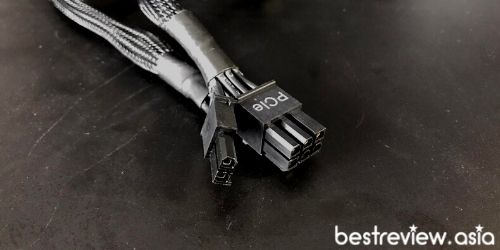

VIDEO
อุปกรณ์ที่ต้องเตรียม ก่อนเริ่มประกอบคอมพิวเตอร์
1. ไขควงขนาดเล็ก
2. สายรัดเคเบิ้ลไทร์
3. กรรไกร หรือคีมขนาดเล็ก
4. วัสดุที่มีพื้นผิวที่เรียบ และจะต้องไม่นำไฟฟ้า เพื่อใช้วางชิ้นส่วนฮาร์ดแวร์ต่าง ๆ
5. ศึกษาคู่มือ
ประกอบคอมพิวเตอร์มี10 ขั้นตอน
ขั้นตอนที่ 1 : การติดตั้ง CPU
ในการประกอบคอมพิวเตอร์ ในขั้นตอนแรกจะเป็นการจัดเตรียมเมนบอร์ดให้พร้อมสำหรับติดตั้ง CPU ซึ่งไม่ว่าจะเป็น Intel หรือ AMD การติดตั้งจะใกล้เคียงกัน โดยมีขั้นตอนดังต่อไปนี้
1. นำเมนบอร์ดออกมาวางบนวัสดุที่ไม่นำไฟฟ้า
2. ทำการปลดล็อคซ็อกเก็ตซีพียู โดยการกดตัวล็อคที่ด้านข้างเบา จากนั้นกางออกให้สุด เพื่อเตรียมนำ CPU มาวาง
3. นำ CPU มาวางลงบนซ็อคเก็ต ที่เราปลดล็อคไว้ โดยให้รอยมาร์ค บน CPU ตรงกับรอยมาร์คบนซ็อกเก็ตเมนบอร์ด
4. จากนั้นค่อย ๆ ขยับ CPU ให้เข้าที่เข้าทาง ตรงกับซ็อคเก็ตของเมนบอร์ด และตรวจสอบการวาง CPU ถ้าตรงตำแหน่งแล้ว คุณก็ทำการปิดตัวล็อค CPU กลับคืนได้เลย เพื่อล็อค CPU ติดกับซ็อคเก็ต
ข้อควรระวัง บนซ็อคเก็ต CPU ของเมนบอร์ด และที่ด้านหลัง CPU จะมีขาทองแดงเล็ก ๆ เรียกว่า “พิน” เรียงรายอยู่เต็มไปหมด ซึ่งคุณต้องระมัดระวังในส่วนนี้ให้มาก ๆ เพราะพินมีความบอบบางเป็นอย่างมาก แค่โดนสะกิดนิดหน่อยมันก็พร้อมที่จะงอแล้ว ซึ่งอาจส่งผลให้ CPU ไม่สามารถทำงานได้
ขั้นตอนที่ 2 : การติดตั้ง RAM
ซึ่งในขั้นตอนนี้ถือเป็นขั้นตอนที่ง่ายมากๆ เพราะมันตายตัว มีสล็อตเฉพาะของมันเอง และยังมีเขี้ยวที่ทำให้คุณใส่ได้อย่างถูกต้องแน่นอน โดยจะมีขั้นตอนง่าย ๆ ดังนี้
1.ขั้นแรกให้คุณทำการปลดล็อค สล็อต RAM ก่อนโดยการกดตัวล็อคสล็อต RAM ที่บริเวณปลายสุดของสล็อตใส่ RAM (ซึ่งเมนบอร์ดบางรุ่นอาจเป็นล็อคด้านเดียว หรือบางรุ่นอาจใช้ล็อคสองด้าน)
2. หากคุณใช้ RAM เพียง 1-2 สล็อต ขอแนะนำให้เปิดคู่มือของเมนบอร์ด เพื่อตรวจสอบลำดับในการติดตั้ง RAM ว่าควรติดตั้ง RAM ในสล็อตไหนก่อน-หลัง (แต่ถ้าใส่เต็มทุกสล็อตก็ใส่ไปได้เลย)
3. ที่สล็อต RAM บนเมนบอร์ด และบนตัว RAM ที่บริเวณทองแดงจะมีการทำร่องเล็ก ๆ เอาไว้อยู่ ให้คุณติดตั้ง RAM โดยเล็งให้ร่องนั้นตรงกัน
4. จากนั้นค่อย ๆ กด RAM ลงไปในสล็อต ซึ่งมันจะไปดันขาล็อคแรมให้กลับมาอยู่ในตำแหน่งล็อคเช่นเดิม (หากเข้าล็อคมันจะมีเสียงดัง “คลิก”)
ขั้นตอนที่ 3 : การติดตั้งไดรฟ์ SSD M.2
ิ
สำหรับไดรฟ์ SSD M.2 เป็นหน่วยความจำข้อมูลแบบใหม่ ซึ่งมีความเร็วในการถ่ายโอนข้อมูลที่สูงมาก ๆ ในปัจจุบัน โดยในการติดตั้งไม่ได้ยากเลย ง่ายกว่าการติดตั้ง SSD หรือ HDD แบบเดิมเสียอีกเพราะไม่ต้องใช้สายใด ๆ เลย หากในสเปกของคุณเลือกใช้ SSD M.2 คุณก็สามารถทำตามง่าย ๆ ดังนี้
1. บนเมนบอร์ดจะมีจุดที่เขียนว่า M.2 PCI-e อยู่ ให้คุณใช้ไขควงไขน็อตที่ยึดช่อง M.2 บนเมนบอร์ดออกก่อน
2. เมื่อไขออกแล้ว ให้คุณนำไดรฟ์ M.2 ค่อย ๆ เสียบเข้าไปในช่อง M.2 บนเมนบอร์ด ด้วยมุมประมาน 45 องศา
3. จากนั้นทำการกดตัวไดร์ฟ M.2 ลงมา โดยให้ขนาดไปกับเมนบอร์ด แล้วค่อยไขน็อตยึดช่อง M.2 กลับไปที่เดิม เพื่อยึดไดร์ฟ M.2 เอาไว้
ข้อควรระวัง ก่อนที่คุณจะทำการกดไดรฟ์ M.2 ลงไป (ในข้อ 3) คุณควรตรวจเช็คให้มั่นใจก่อนว่าไดรฟ์ M.2 ของคุณเข้าล็อคแล้วหรือยัง ? เพื่อป้องกันความเสียหายทั้ง ไดรฟ์ M.2 และเมนบอร์ด
ขั้นตอนที่ 4 : ติดตั้งพัดลมระบายความร้อน CPU (CPU Cooler)
สำหรับซีพียู Intel Core i5-12600K จะไม่มี CPU Cooler มาให้ แถมยังมีการเปลี่ยน Socket ใหม่ ในรอบสิบปี เป็น LGA1700 ทำให้ไม่สามารถใช้ของเก่าที่มีอยู่ได้ เพราะฉะนั้นคุณจำเป็นต้อง ซื้อ CPU Cooler ใหม่ หรือไม่ก็ต้องหาซื้อ ขาแปลง (Mounting) มาใช้งานแทน โดยมีขั้นตอนการติดตั้งดังต่อไปนี้
1. เริ่มต้นด้วยการใส่แผ่น Backplate ที่ด้านหลัง ของเมนบอร์ด จากนั้นมายึดแผ่น Backplate อีกหนึ่งชิ้นที่ด้านหน้า เพื่อเป็นฐาน สำหรับรองรับ CPU Cooler
2. ต่อมาให้ทาซิลิโคนลงบนกระดอง CPU (ควรทาในปริมาณที่พอดี ไม่มากหรือน้อยจนเกินไปคร)
3. จากนั้นนำฮีทซิงค์มาวางทับลงบนกระดอง CPU ตรง ๆ เลย โดยที่แผ่น Backplate จะมีน็อตโผล่ขึ้นมาเล็กน้อย ให้คุณขันน็อตตัวแรกแบบหลวม ๆ ก่อน แล้วสลับไปขันน็อตอีกตัวหนึ่ง (สลับขันไปมาเรื่อย ๆ) จนแน่น (พอตึงมือ)
4. เมื่อติดตั้งฮีทซิงค์เสร็จแล้ว ต่อมาก็ให้ติดตั้งพัดลมเข้ากับฮีทซิงค์ โดยคุณจะต้องเล็งทิศทางให้เรียบร้อยว่า คุณจะเก็บซ่อนสายอย่างไร ? เมื่อได้ทิศทางแล้ว ให้คุณเชื่อมต่อสายพัดลมเข้ากับขั้ว CPU Fan บนเมนบอร์ดเป็นอันเสร็จเรียบร้อย
การใส่ซิลิโคน ควรใส่ในปริมาณที่พอเหมาะพอดี เพราะหากคุณใส่น้อยเกินไปก็จะทำให้ผิวหน้ามีสัมผัสไม่ดี แต่ถ้าหากใส่มากเกินไปก็จะทำให้ซิลิโคนเยิ้มลงไปในซ็อกเก็ตได้
ขั้นตอนที่ 5 : การติดตั้งเมนบอร์ดเข้ากับเคสคอมพิวเตอร์
เมื่อทำการประกอบอุปกรณ์บางส่วนเข้ากับเมนบอร์ดเสร็จเรียบร้อยแล้ว ก็มาถึงขั้นตอน การนำเมนบอร์ดเข้าไปติดตั้งภายในเคสคอมพิวเตอร์กัน ซึ่งคุณจะต้องเตรียมน็อต (ที่มากับเคส) และไขควง เอาไว้ให้พร้อม
1. อันดับแรกให้คุณนำแผ่น I/O Shield (แผ่นปิดพอร์ตต่างๆ ที่มากับเมนบอร์ด) ติดตั้งบริเวณด้านหลังเคสฯ โดยกดลงไปตรง ๆ ให้เข้าล็อคของมัน หลังจากนั้นให้จับเคสคอมพิวเตอร์ นอนลง
2. หันเมนบอร์ดด้านที่มีพอร์ตต่าง ๆ ให้ตรงกับแผ่น I/O Shield โดยการเอียงเมนบอร์ด 45 องศา เมื่อตรงกันแล้วก็ค่อย ๆ วางเมนบอร์ดลงไปได้เลย
3. เมื่อวางลงไปแล้วให้คุณขยับเมนบอร์ดเล็กน้อย เพื่อให้รูน็อตบนเมนบอร์ดตรงกับรูน็อตของเคส จากนั้นก็ไล่ขันน็อตให้แน่น (พอตึงมือ) เพื่อยึดเมนบอร์ดเข้ากับเคส (ส่วนจำนวนน็อตทั้งหมด จะต่างกันไป ขึ้นอยู่กับขนาดของเมนบอร์ด)
ข้อควรระวัง
การขันน็อตเพื่อยึดเมนบอร์ดเข้ากับเคส ข้อควรระวังที่สุดคือ คุณไม่ควรขันแน่นจนเกินไป เพราะรูน็อตอยู่บนเมนบอร์ดโดยตรง ฉะนั้นหากคุณขันน็อตแน่นจนเกินไป มันอาจจะทำให้วงจรบนเมนบอร์ด ได้รับความเสียหายได้ แต่ถ้าหากคุณต้องการการติดตั้งที่แน่นหนา เพื่อรองรับอุปกรณ์ขนาดใหญ่ อย่าง การ์ดจอ หรือพัดลมซีพียู เราขอแนะนำให้คุณ ยึดน็อตให้ครบทุกช่อง โดยขันให้แน่นพอตึงมือ
ขั้นตอนที่ 6 : ติดตั้งอุปกรณ์จัดเก็บข้อมูล (SSD หรือ HDD)
ในขั้นตอนนี้เป็นการติดตั้ง อุปกรณ์จัดเก็บข้อมูลต่าง ๆ ทั้ง SSD SATA และ HDD หากสเปกที่คุณเลือกมาใช้ตัวใด ตัวหนึ่ง หรือใช้ทั้งคู่ ไม่ว่าจะเป็น ขนาด 2.5 นิ้ว หรือ 3.5 นิ้ว คุณก็สามารถทำตามขั้นตอนต่อไปนี้ได้ แต่ถ้าหากคุณใช้แค่ SSD M.2 PCIe/NVMe เพียงอย่างเดียวคุณก็สามารถข้ามขั้นตอนนี้ไปได้ แต่ถ้าหากในอนาคตจะมีการอัพเกรดเพิ่มเติม คุณก็สามารถทำตามขั้นตอนได้ง่าย ๆ ดังนี้
1)1. นำฮาร์ดไดรฟ์ หรืออุปกรณ์จัดเก็บข้อมูล ไม่ว่าจะเป็นแบบใดก็ตาม ติดตั้งเข้ากับเคสฯ (โดยเคสส่วนใหญ่ มีช่องสำหรับติดตั้งทั้ง SSD และ HDD ให้อยู่แล้ว)
2)2. จากนั้นทำการเสียบสาย SATA (สายที่มากับเมนบอร์ด) โดยด้านหนึง เสียบเข้ากับฮาร์ดไดรฟ์ และอีกด้าน ให้เสียบเข้ากับพอร์ต SATA Slots บนเมนบอร์ด
3)3. ส่วนขั้นตอนสุดท้ายให้คุณทำหลังจากติดตั้ง Power supply เสร็จแล้ว โดยนำสาย SATA power จาก Power supply ต่อเข้ากับฮาร์ดไดรฟ์ (ต่อให้ครบทุกไดรฟ์ทั้ง SSD และ HDD) ก็เป็นอันเรียบร้อย
ขั้นตอนที่ 7 : การติดตั้งกราฟฟิกการ์ด หรือการ์ดจอ (GPU)
มากันที่ส่วนยอดนิยม สำหรับทั้ง คนเล่นเกม และคนทำงาน สำหรับการติดตั้ง กราฟฟิกการ์ด หรือการ์ดจอ (GPU) ซึ่งวิธีการติดตั้งก็จะคล้ายคลึงกับการติดตั้ง RAM เลย ต่างกันเพียงเล็กน้อยเท่านั้น ดังนี้
1. ขั้นแรกให้คุณทำการถอด แผ่นปิดสล็อต PCI-e ที่ด้านหลังเคสออกก่อน ซึ่งจะอยู่ตรงกับช่อง PCI-e x16 สำหรับติดตั้งกราฟฟิกการ์ด (ซึ่งจะใช้กี่ช่องก็อยู่ที่กราฟฟิกการ์ดของคุณ อย่างรุ่นไฮเอ็นด์ที่มีขนาดใหญ่ จะจำเป็นต้องใช้ 2 ช่อง)
2. ทำการปลดล็อค ตัวล็อคสล็อต PCI-e โดยการดันตัวล็อคที่อยู่ปลายสล็อตออก (ซึ่งเมนบอร์ดบางรุ่น อาจเป็นล็อคด้านเดียว หรือบางรุ่นอาจใช้ล็อคสองด้านเลย)
3. นำการ์ดจอมาใส่ โดยเล็งแผงทองแดงให้ตรงกับสล็อต PCI-e และเล็งด้านหลังการ์ดให้ตรงกับที่ปิดสล็อต PCI-e ที่ได้ถอดไว้ในข้อที่ 1 จากนั้นค่อย ๆ กดการ์ดลงไปในสล็อตจนมีเสียงดัง “คลิก” (ซึ่งเสียงเกิดจากขาล็อคสล็อตถูกดันกลับมาอยู่ในตำแหน่งล็อคเช่นเดิม)
4. เมื่อติดตั้งเสร็จเรียบร้อยแล้ว ให้คุณมาขันน็อตยึดการ์ดจอที่ด้านหลังของเคสคอมพิวเตอร์ให้ครบถ้วน (โดยนำน็อตจากข้อที่ 1 มาขันกลับเข้าที่เดิม)
5. หากการ์ดจอที่คุณใช้งาน มีพอร์ต 6 Pin, 8 Pin หรือ 12 Pin นั่นหมายถึง การ์ดจอรุ่นนั้น จำเป็นต้องใช้ไฟเลี้ยงเพิ่มเติม ฉะนั้นขั้นตอนสุดท้ายให้คุณทำหลังจากติดตั้ง Power supply เสร็จแล้ว โดยการนำสาย 8 Pin (6+2 Pin) หรือ PCI-E มาต่อเข้ากับการ์ดจอด้วย
ข้อควรระวัง
กราฟิกการ์ดหรือการ์ดจอระดับไฮเอนด์บางรุ่น ได้รับการออกแบบโดยเน้นไปที่การระบายความร้อนที่ดีขึ้น ทำให้มีฮีทซิงค์ขนาดใหญ่ ใช้พัดลม 3 ตัว ส่งผลให้มีทั้งความยาว และน้ำหนักที่มากกว่าการ์ดจอปกติ ดังนั้นหากการ์ดจอของคุณจัดอยู่ในประเภทนี้ เราขอแนะนำให้คุณหาซื้อตัวค้ำการ์ดจอมาใช้ด้วย เพราะถ้าไม่มีการค้ำใด ๆ เลย เมื่อใช้งานไปนาน ๆ ด้วยน้ำหนักที่มาก อาจทำให้ตัวการ์ดงอได้ หรือเมนบอร์ดได้รับความเสียหายได้
ขั้นตอนที่ 8 : การติดตั้ง Power Supply (PSU)
มาต่อกันที่การติดตั้ง Power Supply (PSU) ซึ่งเป็นส่วนสำคัญ ที่ค่อนข้างมีความซับซ้อนเป็นอย่างมาก เนื่องจากมันมีสายไฟ และพอร์ตต่าง ๆ เยอะแยะเต็มไปหมด ฉะนั้นเพื่อให้เข้าใจได้ง่ายขึ้น เราขอแยกขั้นตอนออกเป็น 2 ส่วน ดังต่อไปนี้
8.1 การติดตั้ง Power Supply (PSU) เข้ากับเคสคอมพิวเตอร์
1. ในขั้นแรก ทำการติดตั้ง PSU เข้ากับเคสคอมพิวเตอร์ โดยยึดน็อตให้ครบทั้ง 4 ตัว เพื่อความแน่นหนา
2. ร้อยสายไฟทั้งหมดไปเก็บไว้ที่ด้านข้างของเคสอีกฝั่งนึง (หลังเมนบอร์ด) เพื่อเป็นการเก็บซ่อนสายไฟที่ไม่ได้มีการใช้งาน หรือสายที่มีความยาวมากเกินไป เพื่อความสวยงาม
8.2 การเชื่อมต่อสาย Power Supply เข้ากับอุปกรณ์ต่าง ๆ บน Mainboard
1. สาย 24 Pin : h1 เป็นสายที่มี 24 Pin (20+4 Pin) ถือว่ามีขนาดใหญ่ที่สุด ใช้เชื่อมต่อเข้ากับเมนบอร์ด โดยทำหน้าที่จ่ายไฟเลี้ยงให้เมนบอร์ด
2. สาย 8 Pin หรือ ATX 12V : เป็นสาย 8 Pin แยก 4+4 Pin ใช้เชื่อมต่อกับเมนบอร์ดเช่นกัน แต่มีหน้าที่จ่ายไฟเลี้ยง CPU (พอร์ตจะอยู่ด้านบน ใกล้ CPU) ส่วนที่แยกเป็น 4+4 Pin เนื่องจากมีเมนบอร์ดบางรุ่น ต้องการใช้งานเพียง 4 Pin เท่านั้นtest

3. สาย 8 Pin หรือ PCI-E : เป็นสาย 8 Pin เช่นกัน แต่แยก 6+2 Pin ทำหน้าที่เพื่อจ่ายไฟเลี้ยงให้กับการ์ดจอ ซึ่งการ์ดจอรุ่นเริ่มต้นไม่ต้องใช้ไฟเลี้ยง แต่ถ้ามีสเปกสูงขึ้น มันก็จะใช้ไฟมากขึ้น 6 Pin หรือ 8 Pin ขึ้นไป ทำให้ต้องแยก 6+2 Pin
4. สาย SATA Power : เป็นสายที่มีหน้าตาแตกต่างไปจาก 3 สายก่อนหน้านี้ โดยจะมีขนาดเล็กและแบนกวว่ามาก ตัวพอร์ตคล้ายตัว L มีหน้าที่จ่ายไฟให้กับตัวจัดเก็บข้อมูลเป็นหลัก
5. สาย Molex (4 Pin) : เป็นสายหัวแบนที่หนากว่าสาย SATA Power ภายในมี 4 Pin มีหน้าที่จ่ายไฟให้กับอุปกรณ์ทุกชิ้นที่เชื่อมต่อ อาทิเช่น พัดลมเคส, แสงไฟ RGB หรือชุดควบคุมฟีเจอร์ต่าง ๆ เป็นต้น
6. สาย FDD : เป็นพอร์ตขนาดเล็กที่สุด ซึ่ง PSU ส่วนใหญ่ ใส่มาให้ 1 พอร์ตเสมอ ซึ่งในอดีตใช้จ่ายไฟให้กับฟลอปปี้ดิสก์ (Floppy A) แต่ยุคสมัยนี้คงไม่มีใครใช้เเล้ว เพราะมีแฟลชไดร์ฟมาทดแทน
เมื่อรู้จักหน้าตาและหน้าที่ของพอร์ตทุก ๆ ตัวบน PSU กันไปแล้ว ต่อจากนี้ก็จะเป็นการเชื่อมต่อแต่ละพอร์ตเข้ากับซ็อกเก็ตของเมนบอร์ด และอุปกรณ์ต่าง ๆ ซึ่งเราจะเห็นได้ว่า หน้าตาของแต่ละพอร์ตจะไม่เหมือนกันเลย ฉะนั้นการเชื่อมต่อในส่วนนี้จึงไม่ได้ยุ่งยากอย่างที่คุณคิดเลย เพียงแค่คุณทำการเลือกพอร์ตให้ตรงกัน มันก็สามารถเชื่อมต่อกันได้อย่างพอดี
1. เชื่อมต่อ สาย 24 Pin เข้ากับ ซ็อกเก็ต 24 Pin บนเมนบอร์ด โดยจะอยู่ทางด้านขวามือของเมนบอร์ด ซึ่งคุณสามารถสังเกตุได้ง่าย ๆ จาก ซ็อกเก็ตนี้จะมีขนาดใหญ่ที่สุด
2. จากนั้นให้เชื่อมต่อ สาย 8 Pin (4+4 Pin) เข้ากับ ซ็อกเก็ต 4 Pin หรือ 8 Pin (ขึ้นอยู่กับรุ่นของเมนบอร์ดที่ใช้) ซึ่งจะอยู่บริเวณด้านบนของเมนบอร์ด (ก่อนเสียบลงไปคุณต้องดูก่อนว่าเมนบอร์ดของคุณใช้กี่ Pin ? ถ้าหากใช้ 4 Pin ก็ให้แยกพอร์ตเป็น 4 Pin ก่อน แล้วค่อยเสียบลงไป แต่ถ้าใช้ 8 Pin ก็เสียบลงไปได้เลย)
3. ส่วนต่อมาให้เชื่อมต่อ สาย 8 Pin (6+2 Pin) เข้ากับ กราฟฟิกการ์ด (GPU) ซึ่งจะใช้ซ็อกเก็ตกี่ Pin ? มันก็จะขึ้นอยู่กับกราฟฟิกการ์ดรุ่นที่คุณใช้ (หากเป็นกราฟิกการ์ดรุ่นเริ่มต้น ส่วนใหญ่ก็จะไม่ใช้ไฟเลี้ยงเพิ่ม เพราะไฟจากเมนบอร์ด ผ่านพอร์ต PCI-e ก็เพียงพอแล้ว แต่ถ้าเป็นรุ่นไฮเอนด์ที่มีพัดลม 2-3 ตัว ก็อาจต้องใช้ 8 Pin หรือ 12 Pin (8+8 Pin) 3. ส่วนต่อมาให้เชื่อมต่อ สาย 8 Pin (6+2 Pin) เข้ากับ กราฟฟิกการ์ด (GPU) ซึ่งจะใช้ซ็อกเก็ตกี่ Pin ? มันก็จะขึ้นอยู่กับกราฟฟิกการ์ดรุ่นที่คุณใช้ (หากเป็นกราฟิกการ์ดรุ่นเริ่มต้น ส่วนใหญ่ก็จะไม่ใช้ไฟเลี้ยงเพิ่ม เพราะไฟจากเมนบอร์ด ผ่านพอร์ต PCI-e ก็เพียงพอแล้ว แต่ถ้าเป็นรุ่นไฮเอนด์ที่มีพัดลม 2-3 ตัว ก็อาจต้องใช้ 8 Pin หรือ 12 Pin (8+8 Pin)
4. เชื่อมต่อ สาย SATA Power เข้ากับ ฮาร์ดไดรฟ์ ที่เป็น HDD หรือ SSD
5. สุดท้ายเชื่อมต่อ สาย Molex (4 Pin) เข้ากับ อุปกรณ์เสริมอื่น ๆ เช่น พัดลมเคส, ไฟ LED และอื่น ๆ ตามต้องการ
หมายเหตุ
ในสเปกที่เราใช้เป็นตัวอย่างในวันนี้ ไม่มีทั้ง กราฟฟิกการ์ด, ฮาร์ดดิสก์ และไดรฟ์ DVD ถ้าหากว่าในสเปกของคุณมีอุปกรณ์เหล่านี้ คุณก็แค่นำสายไปเชื่อมต่อเข้ากับอุปกรณ์
คำแนะนำ
วิธีการเลือก Power supply (PSU) ที่เหมาะกับสเปกของคุณ สามารถทำได้ง่าย ๆ เพียงค้นหาคำว่า “Power Supply Calculator” คุณจะพบกับ เว็บฯ คำนวณค่าวัตต์ ที่จะให้คุณเลือกอุปกรณ์ต่าง ๆ ที่ใช้ในสเปกของคุณ จากนั้นเว็ปฯ จะคำนวณค่าวัตต์ออกมาให้ ซึ่งที่เหลือคุณแค่นำค่าวัตต์ที่ได้ไปใช้ในการเลือก PSU โดยคุณจำเป็นต้องเลือก PSU ที่มีกำลังวัตต์มากกว่าที่สเปกของคุณต้องการ เพื่อรองรับการอัพเกรดในอนาค
ขั้นตอนที่ 9 : การเชื่อมต่อสายจากพอร์ตต่าง ๆ หน้าเคส (Front Panel)
ในขั้นตอนนี้ อาจจะมีความยุ่งยากสักเล็กน้อย เนื่องจากพอร์ตส่วนใหญ่มันมีหน้าตาที่เหมือน ๆ กัน แถมยังมีบางพอร์ตอยู่ติดกันอีก และอีกอย่างเมนบอร์ดแต่ละรุ่น ตำแหน่ง และการเขียนกำกับก็ไม่ตรงกัน ฉะนั้นเพื่อความถูกต้อง เราขอแนะนำให้คุณเปิดคู่มือของเมนบอร์ดควบคู่ไปด้วย
1. เริ่มต้นด้วยการเชื่อมต่อปุ่มและไฟต่าง ๆ หน้าเคสทั้ง ปุ่มเปิด-ปิด (Power), ปุ่มรีเซ็ต (Reset), ไฟสถานะ Power LED, ไฟสถานะ HDD LED เข้ากับช่อง System Panel header บนเมนบอร์ด (โดยส่วนใหญ่จะอยู่มุมขวาล่างของเมนบอร์ด)
2. จากนั้นเชื่อมต่อสาย USB ที่อยู่หน้าเคส ไม่ว่าจะเป็น USB2.0, USB3.0 รวมถึง USB Type-C เข้ากับพอร์ต USB2.0, USB3.0 และ USB Type-C บนเมนบอร์ด (ถ้าเคสที่คุณใช้มี แต่หากไม่มี USB3.0 และ USB Type-C สาย USB นั้น ๆ ก็จะไม่มีมาให้) ซึ่งโดยทั่วไป พอร์ต USB ต่าง ๆ จะอยู่บริเวณขอบของเมนบอร์ด ทั้ง ด้านล่าง และด้านขวา)
3. ปิดท้ายด้วยการ เชื่อมต่อสาย HD Audio ซึ่งเป็นแจ็คไมค์ (Mic) และหูฟัง (Headphone) หน้าเคส เข้ากับช่อง Front Panel Audio header ของเมนบอร์ด

 1. สาย 24 Pin : h1 เป็นสายที่มี 24 Pin (20+4 Pin) ถือว่ามีขนาดใหญ่ที่สุด ใช้เชื่อมต่อเข้ากับเมนบอร์ด โดยทำหน้าที่จ่ายไฟเลี้ยงให้เมนบอร์ด
1. สาย 24 Pin : h1 เป็นสายที่มี 24 Pin (20+4 Pin) ถือว่ามีขนาดใหญ่ที่สุด ใช้เชื่อมต่อเข้ากับเมนบอร์ด โดยทำหน้าที่จ่ายไฟเลี้ยงให้เมนบอร์ด
 2. สาย 8 Pin หรือ ATX 12V : เป็นสาย 8 Pin แยก 4+4 Pin ใช้เชื่อมต่อกับเมนบอร์ดเช่นกัน แต่มีหน้าที่จ่ายไฟเลี้ยง CPU (พอร์ตจะอยู่ด้านบน ใกล้ CPU) ส่วนที่แยกเป็น 4+4 Pin เนื่องจากมีเมนบอร์ดบางรุ่น ต้องการใช้งานเพียง 4 Pin เท่านั้นtest
2. สาย 8 Pin หรือ ATX 12V : เป็นสาย 8 Pin แยก 4+4 Pin ใช้เชื่อมต่อกับเมนบอร์ดเช่นกัน แต่มีหน้าที่จ่ายไฟเลี้ยง CPU (พอร์ตจะอยู่ด้านบน ใกล้ CPU) ส่วนที่แยกเป็น 4+4 Pin เนื่องจากมีเมนบอร์ดบางรุ่น ต้องการใช้งานเพียง 4 Pin เท่านั้นtest
 4. สาย SATA Power : เป็นสายที่มีหน้าตาแตกต่างไปจาก 3 สายก่อนหน้านี้ โดยจะมีขนาดเล็กและแบนกวว่ามาก ตัวพอร์ตคล้ายตัว L มีหน้าที่จ่ายไฟให้กับตัวจัดเก็บข้อมูลเป็นหลัก
4. สาย SATA Power : เป็นสายที่มีหน้าตาแตกต่างไปจาก 3 สายก่อนหน้านี้ โดยจะมีขนาดเล็กและแบนกวว่ามาก ตัวพอร์ตคล้ายตัว L มีหน้าที่จ่ายไฟให้กับตัวจัดเก็บข้อมูลเป็นหลัก
 5. สาย Molex (4 Pin) : เป็นสายหัวแบนที่หนากว่าสาย SATA Power ภายในมี 4 Pin มีหน้าที่จ่ายไฟให้กับอุปกรณ์ทุกชิ้นที่เชื่อมต่อ อาทิเช่น พัดลมเคส, แสงไฟ RGB หรือชุดควบคุมฟีเจอร์ต่าง ๆ เป็นต้น
5. สาย Molex (4 Pin) : เป็นสายหัวแบนที่หนากว่าสาย SATA Power ภายในมี 4 Pin มีหน้าที่จ่ายไฟให้กับอุปกรณ์ทุกชิ้นที่เชื่อมต่อ อาทิเช่น พัดลมเคส, แสงไฟ RGB หรือชุดควบคุมฟีเจอร์ต่าง ๆ เป็นต้น
 6. สาย FDD : เป็นพอร์ตขนาดเล็กที่สุด ซึ่ง PSU ส่วนใหญ่ ใส่มาให้ 1 พอร์ตเสมอ ซึ่งในอดีตใช้จ่ายไฟให้กับฟลอปปี้ดิสก์ (Floppy A) แต่ยุคสมัยนี้คงไม่มีใครใช้เเล้ว เพราะมีแฟลชไดร์ฟมาทดแทน
6. สาย FDD : เป็นพอร์ตขนาดเล็กที่สุด ซึ่ง PSU ส่วนใหญ่ ใส่มาให้ 1 พอร์ตเสมอ ซึ่งในอดีตใช้จ่ายไฟให้กับฟลอปปี้ดิสก์ (Floppy A) แต่ยุคสมัยนี้คงไม่มีใครใช้เเล้ว เพราะมีแฟลชไดร์ฟมาทดแทน